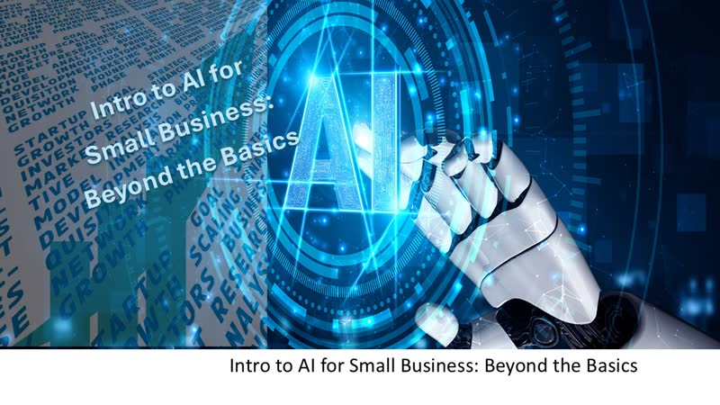
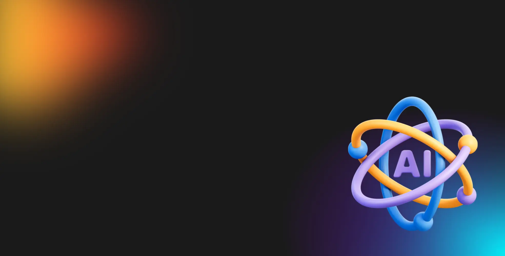

當日舉行
Marketing in the Age of AI
實用導向：顧客點用 AI 搵生意、點改善網站同網上曝光、點用評價同 FAQ 內容，以及點用 AI 分析客戶意見。適合想即刻落地嘅中小企同市場人。
報名／詳情 →卷報 · 免費 AI 課程
二零二六 · 十月廿九日 · 星期四
篩選準則：優先收錄今日舉行嘅線上免費 AI 研討會／工作坊；並補上今日仍可報名、隨時開讀嘅常設免費課。連結以官方為準。
此為 2026-10-29 過刊存檔。當日有多場北美／歐洲線上免費 AI 活動（部分喺香港深夜至清晨舉行）。若錯過現場，部分主辦會提供錄影；其餘可先報名常設免費課自學。
實用導向：顧客點用 AI 搵生意、點改善網站同網上曝光、點用評價同 FAQ 內容，以及點用 AI 分析客戶意見。適合想即刻落地嘅中小企同市場人。
報名／詳情 →
教你點畀 AI 更好嘅任務說明（情境、目標、限制），點用對話式迭代，以及點判斷準確度、私隱同人工判斷邊界。適合已有基本接觸、想進階實用嘅老闆。
報名／詳情 →示範用 Gemini Enterprise AI Agent 做跨部門專案經理：讀取請求、分類緩急、協調 Calendar／Drive／Chat，減少人手交接。附 Blueprint Module 5；無需寫 code。
報名／詳情 →
由單一 prompt 走到個人 AI 系統：辨識自身 AI 使用層級、補足可靠輸出所需上下文。全程德語直播；參加後可獲個人證書。適合懂德文、想系統化用 ChatGPT／Claude 嘅人。
報名／詳情 →面向法醫／心理健康實務：AI 能力入門、工作流程整合、風險同法庭可採納性、資料安全，以及減少偏見同不公嘅策略。專業培訓向，一般聽眾亦可旁聽概念。
報名／詳情 →行政簡報：私募基金點用 Copilot／Azure／AI 加快 deal sourcing、盡職審查同投資組合營運。偏策略同管治，唔係深度產品 demo。請喺 Luma 官方報名（Eventbrite 僅作發現）。
Luma 報名 →以下為長期開放、可即刻自學嘅免費線上課程／教材；唔係當日專場，但適合錯過直播後補學。
十二章實作：Transformers、Datasets、Tokenizer、微調同推理。官方寫明完全免費、無廣告。適合想親手煉 LLM／NLP 嘅工程師。
開讀 →由 Agent 基礎到 smolagents、LlamaIndex、LangGraph；含 agentic RAG 同結業專案。想跟當下「代理式 AI」潮流可由此入門。
開讀 →經典免費深度學習課：電腦視覺、NLP、表格數據、部署；用 PyTorch／fastai。需一定 coding 經驗（建議 Python），可用免費雲端 GPU。
開讀 →開源課綱：提示工程到 RAG 同 Agents；Python／TypeScript 範例。可讀教材即學；跑程式可用 Azure／Foundry Local 等（部分 API 或需費用）。
開讀 →非技術向：生成式 AI 能做／不能做咩、提示工程同業務影響。影片免費；實驗室／證書或需 PRO。適合想建立共同語言嘅產品同管理層。
開讀 →Google 經典 ML 速成：概念、TensorFlow 練習同真實案例。搭配 Introduction to Generative AI 等「No charge」路徑，適合由 ML 基礎補起。
開讀 →官方學習中心：Claude 使用、AI Fluency、Claude Code、API／MCP 等。適合想系統學習用 Claude 同相關工具嘅人。
開讀 →